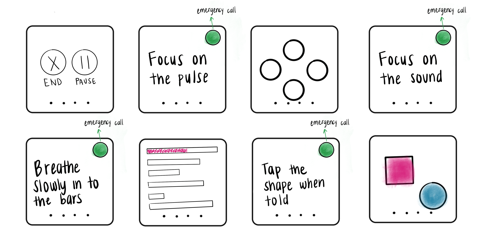
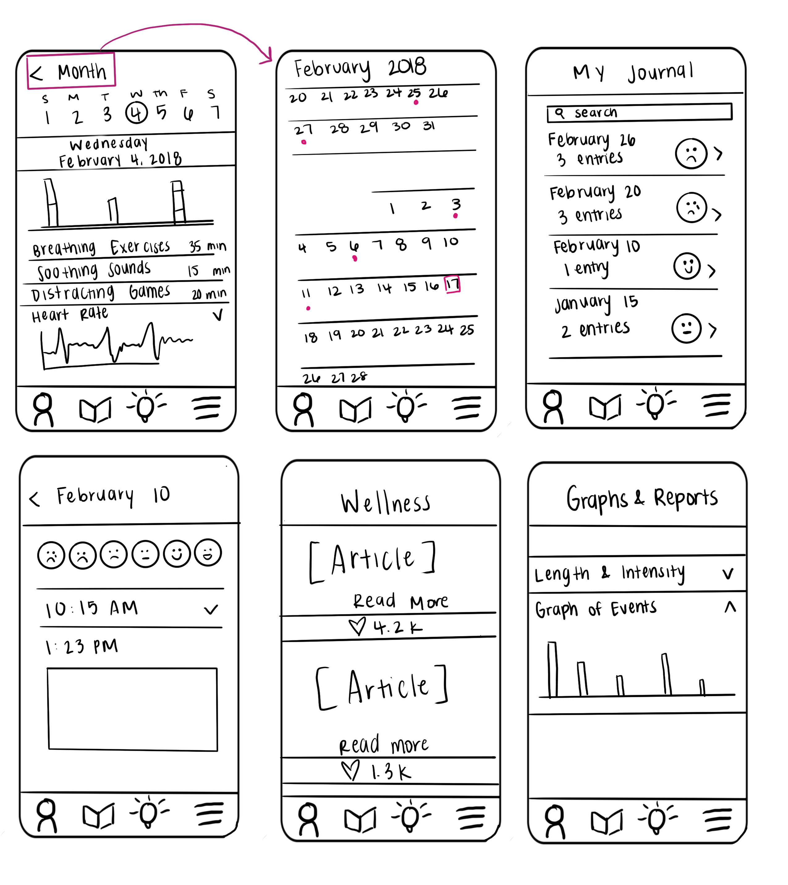
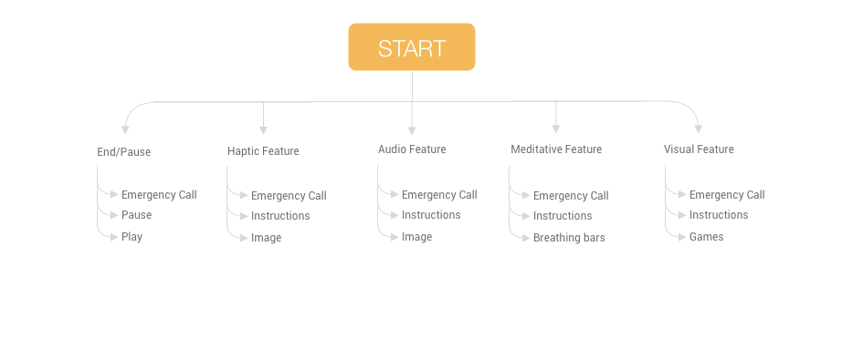
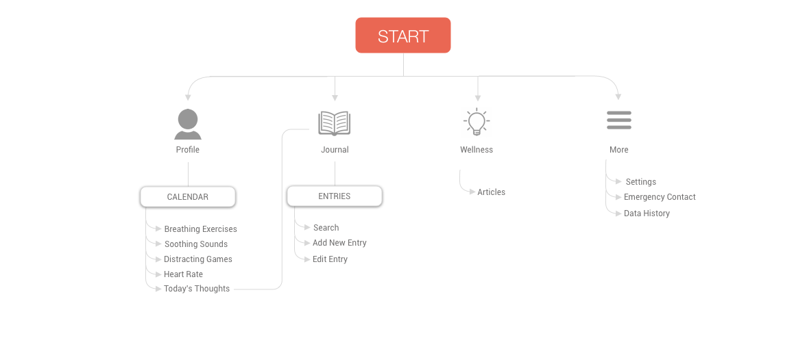

pulse
TIMELINE
Pulse was created as part of a quarter-long course at the University of Washington in a two person group.
ROLE
Product Designer
User Research, Visual Design, Prototyping, User Testing
OVERVIEW
Pulse is a two part solution (an Apple Watch app and an iPhone app), that recognizes the symptoms of an anxiety attack to address and assist people during and after anxiety attacks.
PROBLEM STATEMENT
Those who suffer from anxiety attacks have a hard time finding technology to help deal with anxiety attacks when each anxiety attack can require different coping mechanisms.
DISCOVER
Background
To some people, having anxiety attacks is a daily life challenge, and while there are solutions available to help, there are often drawbacks to each one that causes them to be on the continuous search for something new.
While we can try to design for as many types of anxiety attacks as possible, it’s impossible to fully plan for every single nuanced experience. However, the ability to provide as much of assistance to those who deal with anxiety attacks as possible was very important for us. As I did research and learned from comments after presenting in class, I became aware that there is much more research and ideation that can be when designing in this problem space.
User Research
One of the biggest takeaways from user research is that users wanted to be able to pause and end the features of the app at their own pace, rather than a set time. They also wanted the ability to switch between the features of the app after it automatically opens to their preferred setting. Through feedback, we decided that each feature of the Apple Watch app contains an emergency call button, which can also be set on the app itself to call whomever the user selects; a family member, a friend, or a helpline.
IDEATION
Apple Watch App Sketches
The main features to incorporate from user interviews were haptic feedback (physical pulses), auditory feedack (sounds), meditative feedback (breathing exercises), and visual feedback (visual games). With each feature comes an emergency call option, with the option to swipe to end or pause the use of the app at any time.
Phone App Sketches
For the phone app, there needed to be functionality to set up the watch app. In order to make the phone app more functional, we added a calendar that would be able to log instances of when the watch app was used as well as a journaling feature, should users be inclined to add notes to those instances.
Watch App Wireframes
Phone App Wireframes
DESIGN
Apple Watch App User Flow
The flowchart for the Apple Watch app identifies the features that users may interact with. With the Apple Watch app, there are four features that pulse offers for users who are having a panic or anxiety attack. Each feature offers something different to help users in difference scenarios.
Phone App User Flow
Accompanying the Apple Watch App, the mobile app is meant to not only offer the users features that will let them set up their preferences for the phone app, but increase the usefulness of the watch app in being able to track, journal, and learn more about panic and anxiety attacks.
Apple Watch UI Screens
Focusing on the Apple Watch app, our goal was to design something that was able to provide the user as many options as possible while also being very minimal in the amount of effort needed to use. Our interviews and research showed that users wanted a solution that wouldn't be difficult to navigate, which might exacerbate their anxiety attack.
Phone App UI Screens
As we designed the Apple Watch app, we understood that it would require an iPhone app that would allow the user to set up and utilize the phone app. In creating the linked phone app, we wanted to maximize the usefulness of the app by adding more features that we felt (from our research and user interviews) that users could benefit from.
TAKEAWAYS
Reflections
I think this project was very critical in helping us understand how to design for people who have anxiety and anxiety attacks. I think what we perhaps did not realize and therefore found it hard to design for is just how varied any anxiety or panic attack can be. There is no "one size fits all" tool to help someone when they are having an anxiety attack, just like there is no "one size fits all" user to design for. However, in saying that, I think we attempted to address that challenge by offering a lot of options for the user as well as the ability to control those choices at their own pace, so that they can maintain control over how they choose to use the product.